Lagos que cambian de color, o lagos vecinos de diferentes colores. Lagos de ensueño en medio del desierto, en cráteres volcánicos, o a miles de metros de altura, lagos hipersalados, abarrotados de medusas, lagos que hierven.
Puedes seguirnos en Twitter @101lugares
Lagos que cambian de color, o lagos vecinos de diferentes colores. Lagos de ensueño en medio del desierto, en cráteres volcánicos, o a miles de metros de altura, lagos hipersalados, abarrotados de medusas, lagos que hierven.
Son algunos de los elegidos para repasar lugares que cuesta creer que existen:
1. Lagos del Kelimutu, tres lagos que cambian de color en Indonesia
El primero en la lista, o los primeros, son tres lagos de cráter, en un volcán cerca de Moni, en la isla de Flores, Indonesia. Los tres lagos de Kelimutu tienen diferentes colores, aunque por si fuera poco, cambian. Y el paisaje es evidentemente “irreal”:

NeilsPhotography
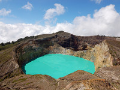
Rosino
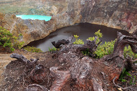
Rocino
2. Los lagos de las dunas de Ihhan Ubari, en Libia.
En las dunas de Ihhan Ubari, en Libia, existen unos 15 lagos de agua salada, entre ellos el más grande llamado Mandara. Sin embargo el más llamativo es el lago llamado Umm el-Maa, también apto para darse un chapuzón.
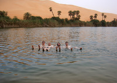
Steve Rideout

Rudolf Baumann

Steve Rideout
3. La laguna Roja, Chile
A tres mil quinientos metros de altura en el norte de Chile, el paisaje se interna en una atmósfera irreal. En tierras aisladas, aún perduran rincones apenas conocidos que ni siquiera figuran en un mapa. La Laguna Roja posee un líquido de un color tan intenso que parece tinta, o sangre, sus aguas permanecen eternamente calientes y por lo tanto, poco se sabe de sus profundidad.
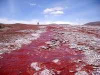
Vladimir Prieto
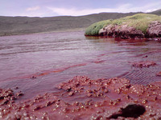
Imagen Vladimir Prieto
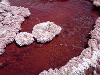
Imagen Vladimir Prieto
4. Lago de las Medusas
Jellyfish…o el Lago de las medusas. Está situado en una de las islas de Roca de Palau, y es un ecosistema equilibrado de forma simbiótica con las algas:
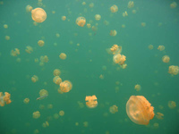
Stefan Krasowski
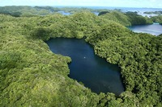
Imagen Lukas en Wikimedia
5. Lago Peyto, Canadá
El Lago Peyto, está considerado uno de los lugares más bellos de Canadá. Situado dentro del Parque Nacional Banff, en el Estado de Alberta, el lago glaciar está a casi 2.000 msnm. Su color turquesa casi inverosímil, es el resultado de la erosión del agua sobre las rocas, volcando al lago unas partículas que le confieren un matiz casi brillante.
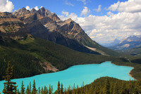
Frank Kovalchek
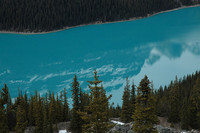
James Pratley
6. Lago Mono, Estados Unidos
Lo que hace diferente al Lago Mono, en el estado de California, Estados Unidos, es su híper salinidad. Las condiciones geológicas, en un área volcánica de altitud, producen un extraño paisaje y un asombroso ecosistema, con imágenes que por momentos, parecen irreales. Lo más llamativo, son las torres de toba calcárea que emergen del agua.
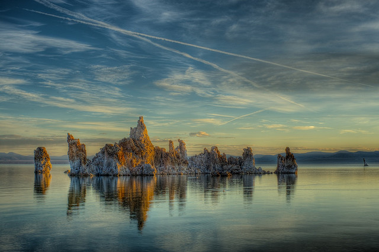
Imagen Ted Wemwemwem

Imagen sskennel
7. Lago del cráter del volcán Irazú, Costa rica
El lago formado en el interior del cráter del volcán Irazú, es un atractivo en si mismo, sobre todo por el color verdoso intenso del agua. El volcán está activo pero sin erupciones desde 1963. El color tan particular es el resultado de una combinación entre la luz y los minerales del agua.
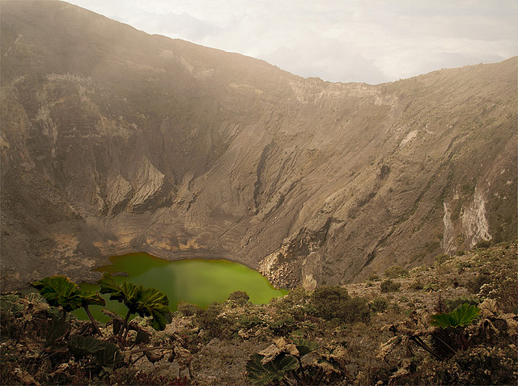
Cristina Valencia
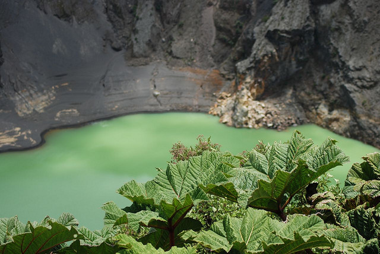
Vincent
8. Laguna Colorada, Bolivia
Se encuentra dentro de la reserva Nacional de Fauna andina Eduardo Abaroa. Laguna Colorada es parte del altiplano boliviano.
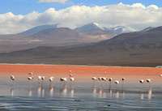
Carlos Adampol Galindo
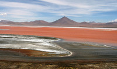
Carlos Adampol Galindo
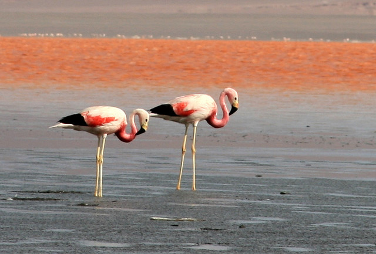
Carlos Galindo
9. El lago de la Brea (Lago Pitch), Trinidad y Tobago.
En la costa sudeste de Trinidad y Tobago, un depósito natural de asfalto poco tiene de parecido a cualquier idea convencional que tengamos de la palabra “lago”. El lago de la Brea tiene una superficie de 47 ha y una profundidad de 80 metros. Es uno de los más grandes del mundo en su tipo. Para recorrerlo, tan sólo hay que mirar bien donde pisar, evitando las zonas viscosas.
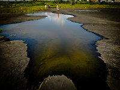
Shriram Rajagopalan
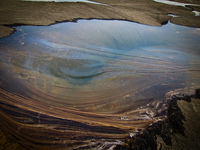
Shiram Rajagopalan
10. Lago Masyuko, uno de los más bellos del mundo.
El lago Masyuko está formado en un cráter volcánico en el Parque Nacional Akan, en la isla de Hokkaido, Japón. Está rodeado de paredes escarpadas de hasta 200 metros de alto, y es uno de los más profundos de Japón, además de uno de los de agua más clara del mundo. Aunque se cree que su transparencia ha variado en los últimos años, alguna vez, fue en base a mediciones, el lago más transparente del planeta, superando al lago Baikal.
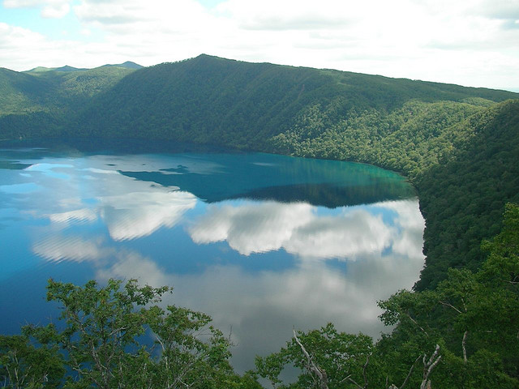
Hajime Nakano
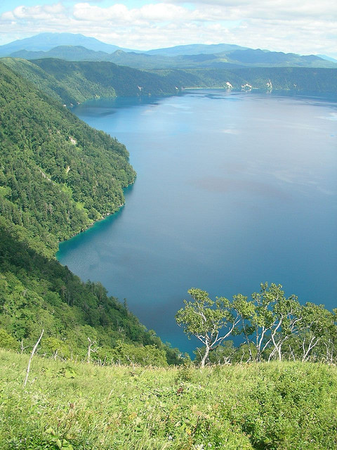
Hajime Nakano
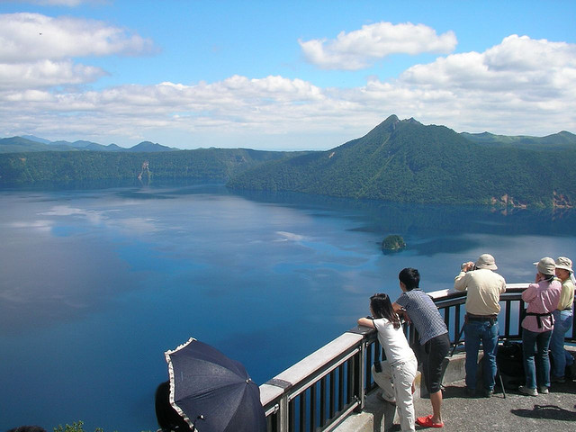
jetalone
11. Lago Five Florwer, China
Se encuentra en la región de Jiushaigou, y está considerado también uno de los más bellos del mundo, gracias a su entorno, a sus aguas cistalinas, y la variedad de tonalidades del agua según cada estación del año:
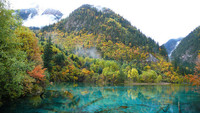
Christopher
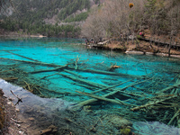
Denise Chan

Imagen Cristopher
12. Lago Boiling, Dominica
Es una fumarola sumergida, o un lago de agua burbujeante cubierto de una nube de vapor. Con el agua a punto de ebullición, el lago Boiling es de imaginar que caer en él no sería un buen final. Su ancho es de apenas 60 metros, y su profundidad se calcula en 59 metro.
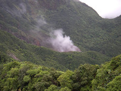
Jean & Nathalie
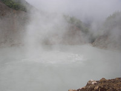
Jean & Nathalie
13. Y más lagos que hierven, en Nueva Zelanda
En el Valle volcánico de Waimangu, en Nueva Zelanda, está situado el sistema hidrotermal generado tras la erupción volcánica del Monte Tarawera, en el año 1886. La zona es hoy un verdadero parque temático volcánico, con sorprendentes lagos termales como el Frying Pan lake, el mayor lago de agua caliente del mundo, entre otros (más info).
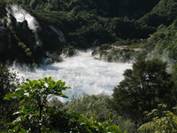
Imagen James
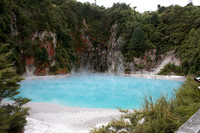
Imagen Katie
14. Lago del Crater, Estados Unidos
Se lo conoce simplemente como Lago del Cráter (en inglés Crater Lake), y está situado dentro del Parque Nacional del Lago del Crater, en el estado de Oregon, Estados Unidos. Aunque famoso por la belleza de su entorno y su agua de color azul intenso y transparente, las mínimas posibilidades de una erupción lo convierten en un verdadero paraíso dormido

Andrew Smith

Alaskan Dude
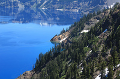
Andy Melton
15. La Gran Fuente Prismática, USA
Es una laguna de un diámetro de 80 metros por 90. Sus aguas tienen 50 metros de profundidad y lo más increíble es que varían entre los colores verdes (en invierno), rojos, naranjas (en verano) y azules producto de las bacterias pigmentadas que crecen alrededor de sus márgenes y gracias a los ricos minerales de sus aguas. Además, la Gran Fuente Prismática es la fuente mayor de aguas termales en Estados Unidos y la tercera más grande del mundo.
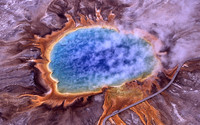
Imagen Jim Trodel
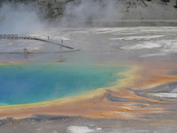
Richie Diesterheft
16. El Gran Lago Salado en Utah
Al oeste de Estados Unidos, y al norte de Utah, se encuentra el Great Salt Lake, un gran lago salino endorreico con importantes fluctuaciones en su nivel. La salinidad, supera a la de los océanos notablemente, y también, no es difícil flotar en él, sobre todo en la zona más al norte.
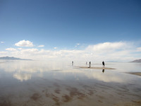
Emily Bergquist
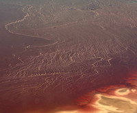
Sharon Mollerus
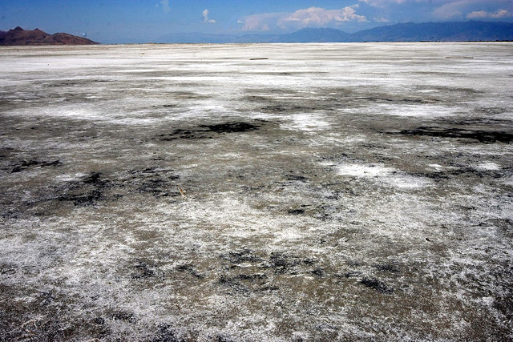
Bruce Tuten
Si copias o citas la entrada, simplemente enlaza a la fuente original